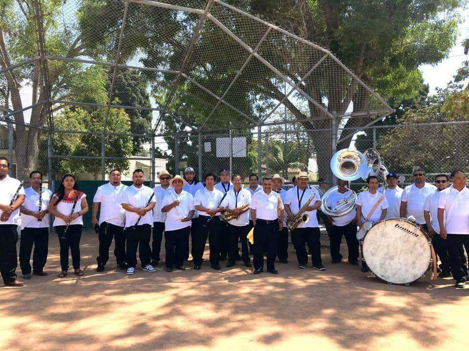
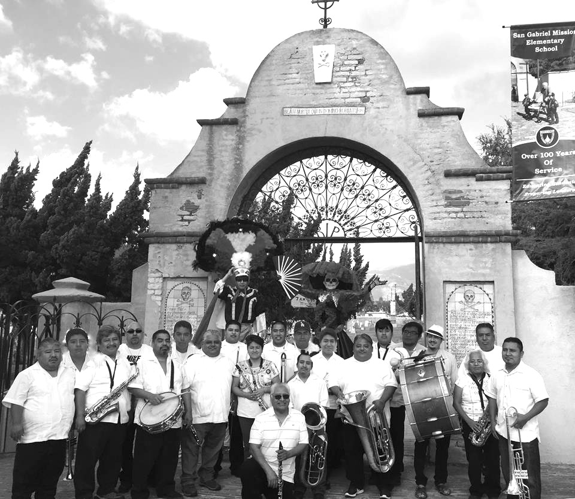

Banda Filarmónica Santa Maria Xochixtepec
Con la ayuda de Alberto Montellano Mazas, un respetado músico de Villa Hidalgo Yalalag, Oaxaca, la Banda Filarmónica Santa Maria Xochixtepec empezó sus primeras clases de música en 1978. Los primeros estudiantes que formaron parte de la banda fueron miembros de la comunidad que se establecieron en Los Angeles, California, junto con entusiastas Xochixtepec Oaxaqueño-Americanos de primera generación, queriendo comprender la música tradicional que enorgullece a sus familias. Con el tiempo, la banda empezó a desarollarse y los hijos de inmigrantes interesados en la banda formaron parte de esta gran tradición. Hoy en dia, la banda está en su cuarta generación de músicos estudiando música. Los integrantes de la banda están orgullosos de ser formados por oriundos ó descendientes de Santa María Xochixtepec.
Banda Filarmónica Santa Maria Xochixtepec participó en el festival inaugural de la Guelaguetza en 1987 con la Organización Regional Oxaqueño en Normandie Park. También tuvieron la oportunidad de viajar a Santa María Xochixtepec en 1979, 1984, 1993 y 2001 para participar en la celebración anual del pueblo. En el 2004, la banda grabó y lanzó su primer CD dedicado al director fundador Alberto Montellano Mazas.
Ernesto Cruz Valente es un Xochixtepec Oaxaqueño-Americano de primera generación y empezó sus estudios musicales con la Banda Filarmónica Santa Maria Xochixtepec bajo la dirección de Luis Hilario Hernandez. Continuó sus estudios en California State University, Northridge y recibió la Licenciatura en música en el 2013. Luego ingreso a California Institute of The Arts, obteniendo su Maestria en Bellas Artes en el 2015. Tuvo el privilegio de estudiar bajo Julia Heinen, William Powell, Susie Allen, y Mark Menzies. Actualmente, Ernesto es el director de la Banda Filarmónica Santa Maria Xochixtepec.
Banda Yatzachi el Bajo-Los Ángeles
San Baltazar Yatzachi el Bajo (YEB) es una de las 25 municipalidades que forman parte del distrito de Villa Alta en el norte de la Sierra de Oaxaca, Mexico. Hoy en dia, el pueblo de Yatzachi el Bajo tiene una población de aproximadamente 90 habitantes. Este numero es el resultado de gran migración a otras partes de mexico y a los estados unidos.
Hoy en la ciudad de Los Angeles se encuentra una población oaxaqueña considerable que incluye miembros de la comunidad de Yatzachi el Bajo. Los primeros inmigrantes de YEB empezaron a llegar durante los 1950s. En los veinte años que siguieron, llegaron a establecer una gran comunidad de YEB que logró ayudar su ciudad natal y a la vez conservar y celebrar sus tradiciones en un nuevo entorno.
La idea de crear una banda de música tradicional provino de dos miembros de la comunidad inmigrante de YEB, los difuntos Bernardino Hernández, y Arcadio Sánchez. Con la ayuda de sus partidarios, esta idea se realizó en mayo del 1990 cuando se estableció la Banda Yatzachi el Bajo. El objetivo de esta iniciativa fue enseñarle a la nueva generación de descendientes de Yatzachi sus practicas culturales. La banda es la segunda banda de este tipo establecida en Los Angeles, y el primer en incluir mujeres músicas.
Durante los últimos años, Banda Yatzachi el Bajo ha tenido el privilegio de viajar por toda California participando en varias celebraciones culturales en San Diego, Fresno, Santa Cruz, Oxnard, Bakersfield, Santa Maria, San Jose, San Bernardino, y Las Vegas, Nevada y San Antonio, Texas. Desde 1992 la banda ha participado en la celebración anual de la Guelaguetza patrocinado por la Organización Regional Oaxaqueña (ORO). Viajar a Yatzachi el Bajo para tocar en la fiesta anual del pueblo ha sido uno de los mayores logros de la banda.
En su ciudad natal de Los Angeles, Banda Yatzachi el Bajo ha tenido el honor de tocar en el Ford Amphitheater, Getty Museum, Los Angeles County Museum of Art, Museum of Latin American Art, Hollywood Forever, Our Lady of the Angels Cathedral, UCLA y el San Gabriel Mission. Ali Guzman ha sido director de la banda desde 1995.
Este año marca el 28º aniversario de Banda Yatzachi el Bajo que debe su exitoso desarrollo a la dedicación incansable ejercida por los músicos y el gran apoyo de la comunidad. La banda se ha dedicado a preservar su cultura atravéz de la música y apoyar a comunidades migrantes en Los Angeles, incluso su propia comunidad de Yatzachi el Bajo, una comunidad de la que están orgullosos de ser parte.
Maqueos Music Academy
Empezó a desempeñar como director y formador de bandas de música en 1995.Tan sólo 18 años de estancia en Los Ángeles, California, Maqueos ha formado varias bandas, fundado una academia musical y ha capacitado a cientos de músicos oaxaqueños ,de otros estados y de otros países.

En el 2005 formó la academia maqueos music, donde actualmente imparte clases de música a toda la comunidad del sur de california. Aquí los estudiantes aprenden a tocar instrumentos musicales de viento como: trompeta, clarinete, soprano, sax alto, sax-tenor, sax-hor, trombón, tuba, barítono, percusión, flauta, etc. Y también se especializa en la formación de bandas de música.
La misión de la Academia Maqueos Music, es impulsar la música, crear un espacio dondetodos los niños, jóvenes y personas del sur de California puedan encontrar un pasatiempo sano mientras conservan la cultura por medio de la música. En esta institución se hace hincapié de la importancia de la disciplina, paciencia y dedicación.
Nueva Dinastia